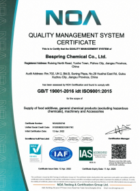
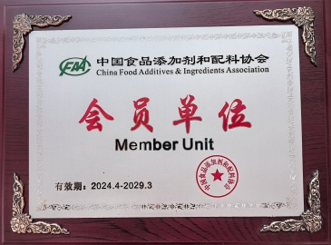

ISO 9001:2015
我们的 ISO 9001:2015 质量管理体系证书覆盖证书所列销售活动。有效期：2025年11月12日至2028年11月11日。
请告知产品、等级、应用、目标市场和认证要求。订单确认前，我们将与您沟通可提供的文件及其对应的产品和生产地点范围。

我们的 ISO 9001:2015 质量管理体系证书覆盖证书所列销售活动。有效期：2025年11月12日至2028年11月11日。

我们是中国食品添加剂和配料协会（CFAA）会员单位。会员证书所列期间为2024年4月至2029年3月。
请在询价时说明 Halal 或 Kosher 要求，并与我们的团队沟通对应产品、等级和生产地点的文件。证书范围不应视为自动覆盖全部产品。
索取产品文件请在询价时说明 Halal 或 Kosher 要求，并与我们的团队沟通对应产品、等级和生产地点的文件。证书范围不应视为自动覆盖全部产品。
索取产品文件所需产品等级的身份信息、质量指标、检测方法及技术资料。
供货材料的危害、操作、储存及安全控制信息。
用于对照约定规格的代表性或批次检测结果。
每份文件均有对应的主体、活动、产品、生产地点和有效期间。请根据订单及目标市场要求核对这些信息。
可索取现行规格书或 TDS、SDS、样本或批次 COA，以及相关证书。可提供的文件因产品、等级和供货来源而异。
每份文件均有对应的主体、活动、产品、生产地点和有效期间。请根据订单及目标市场要求核对这些信息。
请在询价时说明 Halal 或 Kosher 要求，并与我们的团队沟通对应产品、等级和生产地点的文件。证书范围不应视为自动覆盖全部产品。
请告知产品、等级、应用、目标市场和认证要求。订单确认前，我们将与您沟通可提供的文件及其对应的产品和生产地点范围。